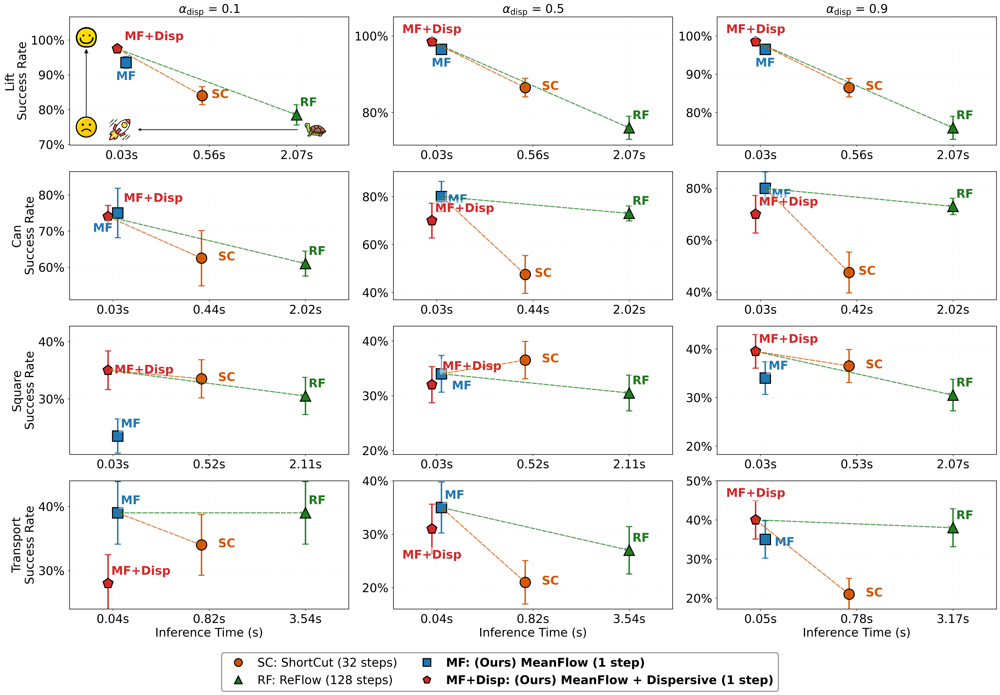

TL;DR: We propose DMPO (Dispersive MeanFlow Policy Optimization), a unified framework that enables true one-step generation for real-time robotic control through three key components: MeanFlow for mathematically-derived single-step inference, dispersive regularization to prevent representation collapse, and RL fine-tuning to surpass expert demonstrations. DMPO achieves competitive or superior performance with 5-20× inference speedup, exceeding real-time requirements (>120Hz) and reaching hundreds of Hertz on high-performance GPUs.
Stage 1: Pre-Training Results
RQ1: Can one-step generation match or exceed multi-step diffusion policies while achieving faster inference?
Answer: Yes. DMPO achieves dramatic inference efficiency gains with true one-step generation:

Inference efficiency vs. success rate trade-off across four RoboMimic tasks. The upper-left region (fast + high success) is ideal. MF and MF+Disp lie on the Pareto frontier, achieving 6-10x speedup over ShortCut and 25-40x over ReFlow while maintaining superior success rates.
RQ2: Is dispersive regularization essential for preventing mode collapse in one-step generation?
Answer: Yes. Dispersive regularization significantly improves success rates by preventing representation collapse:

Success rate vs. denoising steps on four RoboMimic tasks (Lift, Can, Square, Transport). MeanFlow variants achieve near-saturated performance at 1-5 steps, while ReFlow and ShortCut require 32-128 steps. Dispersive regularization reduces variance on complex tasks.